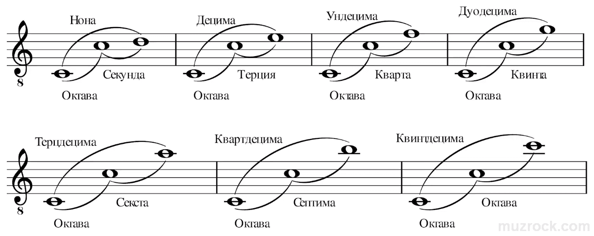
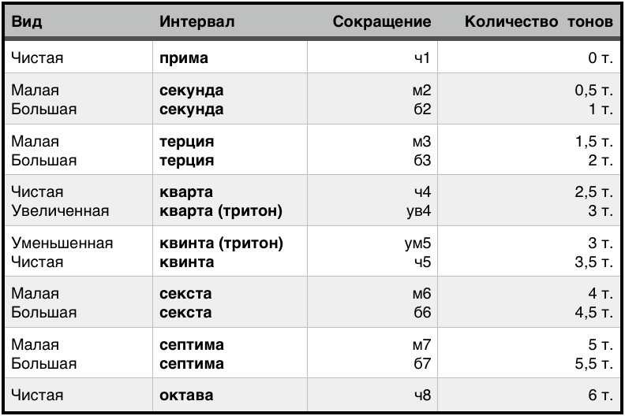

Урок 25. Интервалы.
Теория
Интервал — это расстояние между двумя звуками по высоте. Интервалы бывают разными: от самого маленького (полутон) до очень больших (октава и больше).
- Интервалы измеряются количеством ступеней между двумя нотами. Например, от До до Ми — это интервал в три ступени, который называется терция.
- Основные интервалы: прима (1 ступень), секунда (2 ступени), терция (3 ступени), кварта (4 ступени), квинта (5 ступеней), секста (6 ступеней), септима (7 ступеней), октава (8 ступеней).
- Интервалы могут звучать по-разному: близко (мелко) или широко (просторно).
Интервалы — основа для построения аккордов и мелодий в музыке.
Важно уметь различать интервалы на слух и по нотной записи.
Например, интервал от До до До — это октава, а от До до Ре — секунда.
Упражнения
- Распознавание интервала: Определите, какой интервал между двумя нотами (От До до Ми — терция; От До до Фа — кварта; От Соль до До — кварта; От Ля до Фа — секста).
- Пение: Пропойте разные интервалы: секунда, терция, кварта, квинта, октава (До, Ми, Фа, Соль, До, Ре, Си, До).
Аудио-примеры
Примеры интервалов:
Визуальные примеры
Интервалы на нотном стане:

Схема интервалов:
